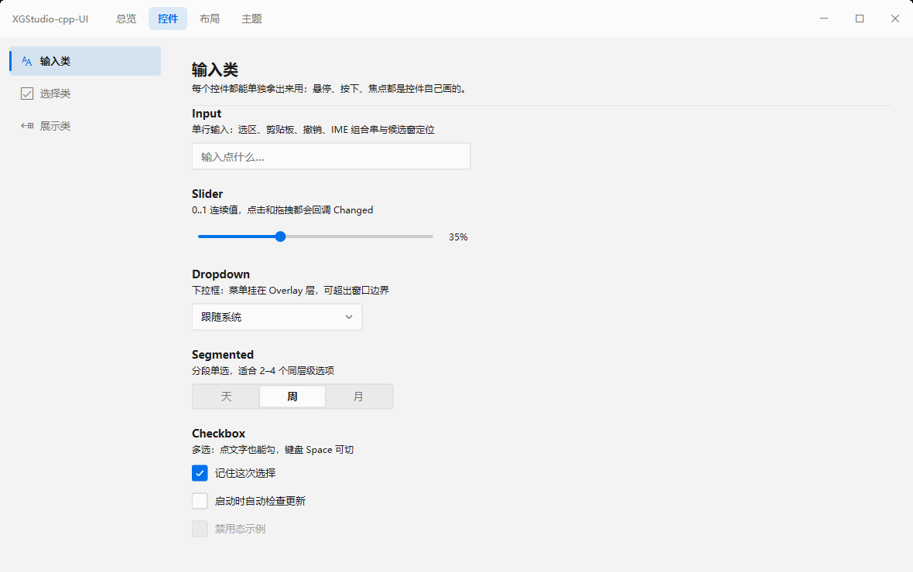
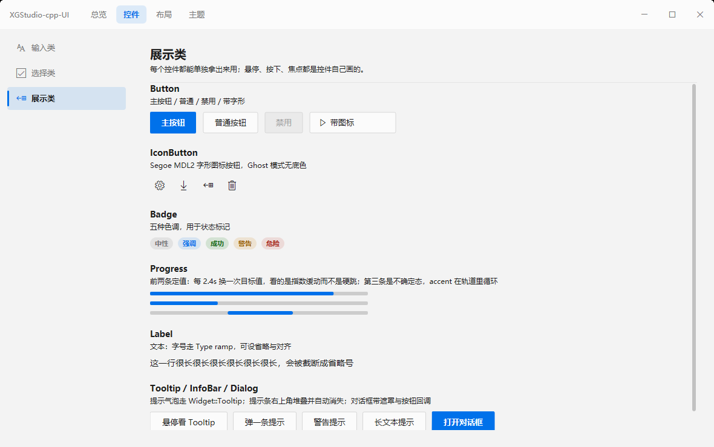

XGStudio-cpp-UI
C++17 与 Direct2D 实现的 Windows 全自绘控件库，版本 1.0.0，Apache-2.0 许可。
A fully self-drawn Windows control library built on C++17 and Direct2D. Version 1.0.0, Apache-2.0.
窗口里没有任何系统控件——没有 EDIT、COMBOBOX、BUTTON，
每一个像素都由 vcui::Gfx 用 Direct2D 绘制。库以单一 Fluent 2 底座组织视觉：
尺寸走 Metrics、颜色走 Token、字号走 type ramp，
提供浅色 / 深色两档 × Microsoft / GitHub 两套色板。
The library hosts no system controls at all — no EDIT, COMBOBOX or
BUTTON; every pixel is drawn by vcui::Gfx through Direct2D. A single
Fluent 2 foundation governs the visuals: sizing through Metrics, colour through
Token, and typography through the official type ramp, with light/dark variants
across two palettes (Microsoft and GitHub).
命名约定：项目对外名称为 XGStudio-cpp-UI（仓库、文档、示例标题均使用它），代码侧标识符仍为 vcui：命名空间 vcui、CMake 目标 VCUI::vcui、产物 vcui.lib、宏 VCUI_*。这样改名不会打断已链接该库的工程，find_package(VCUI) 照旧可用。
Naming: the public product name is XGStudio-cpp-UI (used by the repository, documentation and demo titles), while code-level identifiers remain vcui: namespace vcui, CMake target VCUI::vcui, artifact vcui.lib, macros VCUI_*. Renaming therefore does not break existing consumers, and find_package(VCUI) keeps working.


截图来自仓库内的 VCUIFrameDemo 展示程序，并非设计稿。
Screenshots come from the in-repository VCUIFrameDemo demo, not design mockups.
核心特性Key characteristics
- 真正的全自绘：光标、选区、滚动、下拉弹层、滑块手柄、开关滑块、导航指示条、阴影与圆角描边全部由
Gfx绘制，没有CreateWindowEx子窗口，也不混用 Owner-Draw。 - Genuinely self-drawn: carets, selections, scrolling, dropdown popups, slider thumbs, switch knobs, navigation indicators, shadows and rounded strokes are all painted by
Gfx; there are noCreateWindowExchild windows and no owner-draw hybrids. - 完整接管输入法：
Input处理WM_IME_*消息，用ImmSetCompositionWindow定位组合串、ImmSetCandidateWindow定位候选窗，组合串带下划线渲染，光标随组合推进。 - Full IME integration:
InputhandlesWM_IME_*messages, positions the composition string withImmSetCompositionWindowand the candidate window withImmSetCandidateWindow; composition text is underlined and the caret advances with it. - 只依赖 Direct2D 1.0：使用
ID2D1BitmapRenderTarget持久离屏层，阴影为 4 层缩放的圆角位图叠加（带缓存），不需要ID2D1Effect、D3D11 设备、Acrylic 或 Mica。 - Direct2D 1.0 only: a persistent off-screen layer on
ID2D1BitmapRenderTarget; shadows use four scaled rounded-rect bitmaps with caching. NoID2D1Effect, no D3D11 device, no Acrylic or Mica. - 完整键盘导航：
Tab、Space、方向键、F4、Esc在所有控件上接通；焦点环按 Fluent 的 focus-visible 规则仅由键盘操作触发。 - Complete keyboard navigation:
Tab,Space, arrow keys,F4andEscwork across all controls; the focus ring follows Fluent's focus-visible rule and appears only for keyboard interaction. - 闲置不耗 CPU：有动画时跟随
DwmFlush合成节拍，无动画时挂起等待消息，实测空闲帧增量为 0、CPU 占用 0%。 - No idle CPU cost: the frame loop follows the
DwmFlushcomposition cadence while animating and suspends to the message queue when idle; measured idle frame growth is zero and CPU usage is 0%. - 便于单文件分发：默认为静态库；开启
VCUI_STATIC_RUNTIME=ON后连 MSVC 运行时一并静态链接。 - Single-file distribution: static library by default; with
VCUI_STATIC_RUNTIME=ONthe MSVC runtime is linked statically as well.
快速开始Getting started
CreateAppWindow 封装了 DPI 感知、自绘边框、库自带标题栏（系统按钮与拖动）以及消息循环：
CreateAppWindow wraps DPI awareness, the custom frame, the built-in title bar (system buttons and dragging) and the message loop:
#include <windows.h>
#include <vcui/vcui.h>
int WINAPI wWinMain(HINSTANCE, HINSTANCE, PWSTR, int) {
return vcui::CreateAppWindow(L"My App", 960, 640, [](vcui::Widget& body) {
auto page = vcui::VBox(14.f);
page->Pad(24.f);
page->Add(std::make_shared<vcui::Label>(L"Hello", 20.f, 600));
auto card = std::make_shared<vcui::Card>();
card->Add(std::make_shared<vcui::Input>(L"Type something..."));
card->Add(std::make_shared<vcui::Button>(L"OK", true));
page->Add(card);
body.Add(page);
});
}
需要深色、切换色板、自定义强调色或去掉库标题栏时，改用结构体版本：
For dark mode, a different palette, a custom accent colour or no built-in title bar, use the options struct:
vcui::AppOptions o;
o.Title = L"Settings";
o.Width = 900; o.Height = 620;
o.Dark = true;
o.Pal = vcui::Palette::GitHub;
o.Accent = vcui::Hex(0x7C4DFF);
o.TitleBar = false; // build your own title bar
o.BodyPad = 20.f;
o.Build = [](vcui::Widget& body) { /* ... */ };
return vcui::CreateAppWindow(o);
入口不命名为 CreateWindow，因为 <windows.h> 会将其宏定义为 CreateWindowW。
The entry point is deliberately not named CreateWindow: <windows.h> macro-defines that identifier to CreateWindowW.
控件Controls
include/vcui/Controls.h 共提供 17 个控件，全部自绘并共享同一套 Token 与 Metrics。
include/vcui/Controls.h provides 17 controls, all self-drawn and sharing the same Token and Metrics system.
| 控件Control | 说明Description |
|---|---|
Label | 文本；支持真换行、超宽省略与 type ramp。Text with real wrapping, ellipsis and type-ramp sizing. |
Button | 主 / 次按钮，可选 Segoe MDL2 字形与危险态。Primary/secondary button with optional Segoe MDL2 glyph and danger state. |
IconButton | 图标按钮，Ghost 模式无底色。Icon button; Ghost mode has no fill until hover. |
Checkbox | 复选框，Changed(bool) 回调。Checkbox with a Changed(bool) callback. |
Switch | 开关，滑块位置带缓动。Toggle switch with eased knob movement. |
Input | 文本输入，含光标、选区与输入法组合串。Text input with caret, selection and IME composition. |
Slider | 0..1 滑块，点轨道即吸附，键盘可步进。0..1 slider; clicking the track snaps, keyboard steps supported. |
Progress | 进度条；Indeterminate 切不确定态。Progress bar; Indeterminate switches to the looping state. |
Segmented | 分段选择，选中胶囊在段间滑动。Segmented selector with a sliding pill. |
Badge | 状态徽章：中性 / 强调 / 成功 / 警告 / 危险。Status badge: neutral, accent, success, warning, danger. |
NavItem | 导航项；同一父容器内自动构成单选组。Navigation item; siblings in one parent form a radio group automatically. |
ListRow | 列表行：标题、副标题、右侧值与选中态。List row with title, subtitle, trailing value and selection. |
Dropdown | 下拉框；菜单挂在 Overlay 层，可超出窗口边界。Dropdown; the menu lives in the overlay layer and may extend past the window. |
Tooltip | 悬停提示；设置 Widget::Tooltip 后 600ms 自动弹出。Hover tooltip; set Widget::Tooltip and it appears after 600 ms. |
InfoBar | 右上角提示条，堆叠、统一宽度、超宽省略。Top-right info bar notifications: stacked, uniform width, ellipsised. |
Dialog | 模态对话框：全屏遮罩加居中卡片。Modal dialog: full-screen scrim with a centred card. |
TitleBar | 自绘标题栏：系统按钮与可选的顶部导航。Custom title bar with system buttons and optional navigation. |

主题与排版Theme and typography
Theme 由三部分构成：pal（色板）、dark（明暗）与 accent（强调色）；执行 Refresh() 后得到 t（Tokens）与 m（Metrics）。
Theme has three inputs — pal (palette), dark (mode) and accent; Refresh() derives t (Tokens) and m (Metrics).
app.SetTheme(vcui::Palette::GitHub, /*dark=*/true); app.SetAccent(vcui::Hex(0xFF6A00)); // accentHover / accentPress / accentSoft / accentSel are derived
基础 Token 沿用历史命名的拼音缩写，下表为实际取值（Microsoft 与 GitHub 色板）：
Base tokens keep their historical pinyin abbreviations; actual values for both palettes:
| Token | 语义Meaning | MS 浅light | MS 深dark | GH 浅light | GH 深dark |
|---|---|---|---|---|---|
kp | 卡面 / 控件底色Key surface | fbfbfb | 2b2b2b | ffffff | 0c1117 |
bj | 页面背景Page background | f3f3f3 | 202020 | f5f8fa | 000409 |
xt | 悬停填充Hover fill | eaeaea | 2d2d2d | f2f3f5 | 1e242a |
wz | 主文字Primary text | 1b1b1b | f7f7f7 | 1e2328 | eef6fc |
派生 Token（accentHover、accentPress、onAccent、accentSoft、accentSel、text2、text3、border、divider、pressed、panel）随强调色与明暗自动计算，无需手工填写。
Derived tokens (accentHover, accentPress, onAccent, accentSoft, accentSel, text2, text3, border, divider, pressed, panel) are computed from the accent colour and mode; none are set by hand.
字号不直接写数字，而是走官方 type ramp，每档自带字号、字重与行高：
Font sizes are not raw numbers but entries of the official type ramp, each carrying size, weight and line height:
| 档位Style | 字号 / 行高Size / line height | 字重Weight | 用途Usage |
|---|---|---|---|
Caption1 | 12 / 16 | 400 | 辅助文字、表格副值Secondary text, table sub-values |
Body1 | 14 / 20 | 400 | 正文、表单值Body copy, form values |
Subtitle1 | 20 / 26 | 600 | 区块标题Section headings |
Title1 | 32 / 40 | 600 | 页面主标题Page titles |
Display | 68 / 92 | 600 | 大屏头图Hero display |
非标准字号由 TypeFor(px) 兜底：落到最近一档并按比例缩放行高。
Non-standard sizes fall back through TypeFor(px), which snaps to the nearest ramp entry and scales the line height proportionally.
构建与集成Build and integration
cmake -S . -B .build -G "Visual Studio 17 2022" -A x64 cmake --build .build --config Release
| CMake 选项CMake option | 默认Default | 说明Description |
|---|---|---|
VCUI_BUILD_SHARED | OFF | ON 时构建 DLL 与导入库Build the DLL and import library |
VCUI_BUILD_DEMO | ON | 构建示例程序Build the demo executables |
VCUI_STATIC_RUNTIME | OFF | 使用 /MT，静态链接 MSVC 运行时Use /MT and link the MSVC runtime statically |
方式一：源码内嵌（推荐）Option 1: add_subdirectory (recommended)
add_subdirectory(path/to/XGStudio-cpp-UI) target_link_libraries(YourApp PRIVATE VCUI::vcui)
方式二：安装后 find_packageOption 2: install and find_package
cmake --install .build --config Release --prefix path/to/install # then, in your project find_package(VCUI 1.0 REQUIRED) target_link_libraries(YourApp PRIVATE VCUI::vcui)
配置时需带上前缀：-DCMAKE_PREFIX_PATH=path/to/install。系统库由 VCUI::vcui 自动传递：d2d1 dwrite dwmapi uxtheme user32 gdi32 ole32 imm32。
Pass the prefix at configure time: -DCMAKE_PREFIX_PATH=path/to/install. System libraries are propagated automatically by VCUI::vcui: d2d1 dwrite dwmapi uxtheme user32 gdi32 ole32 imm32.
此外仓库根目录带 vcpkg.json manifest，可通过 overlay port 安装；也可手动把 include/ 加入头文件路径并链接 vcui.lib。
The repository also ships a vcpkg.json manifest for overlay-port installation; alternatively add include/ to the include path and link vcui.lib plus the system libraries above.
系统要求System requirements
| 项Item | 要求Requirement |
|---|---|
| 操作系统OS | Windows 10 1703（build 15063）及以上，含 Windows 11Windows 10 1703 (build 15063) or later, including Windows 11 |
| 编译器Compiler | MSVC 2019 / 2022（C++17），已在 MSVC 14.44 验证MSVC 2019/2022 (C++17); verified on MSVC 14.44 |
| 架构Architecture | 已验证 x64；x86 / ARM64 未测试x64 verified; x86 / ARM64 untested |
| 图形Graphics | 任意支持 Direct2D 1.0 的显卡 / 驱动，含 WARP 软渲染回退Any GPU/driver supporting Direct2D 1.0, including the WARP software fallback |
下限由 Per-Monitor V2 DPI 决定（DPI_AWARENESS_CONTEXT_PER_MONITOR_AWARE_V2），与 Direct2D 版本无关。库不支持 Windows 7 / 8 / 8.1。
The floor is set by Per-Monitor V2 DPI (DPI_AWARENESS_CONTEXT_PER_MONITOR_AWARE_V2), not by the Direct2D version. Windows 7 / 8 / 8.1 are not supported.
性能Performance
测试机：Intel Core i7-3520M、12GB DDR3 1600MHz、Intel HD Graphics 4000（未使用独显），程序为 VCUIFrameDemo.exe。
Test machine: Intel Core i7-3520M, 12 GB DDR3-1600, Intel HD Graphics 4000 (discrete GPU unused), running VCUIFrameDemo.exe.
| 指标Metric | 实测Measured |
|---|---|
| 内存占用（启动后）Memory footprint (after launch) | 12.7 MB |
| 静态 CPU（失焦 20s）Idle CPU (20 s unfocused) | 0 % |
| 静态 GPUIdle GPU | 0 % |
| 动态 CPU（持续切页）Active CPU (page switching) | ≤ 5 %（实测峰值 4.4 %）≤ 5% (peak 4.4%) |
| 动态 GPUActive GPU | ≤ 10 %（实测峰值 7 %）≤ 10% (peak 7%) |
| 滚动 / 动画单帧绘制Frame paint, scrolling/animation | < 12 ms |
实现上采用持久离屏层、脏矩形重绘、IDWriteTextLayout 文本缓存与 64 张上限的阴影位图缓存；滚动只刷新滚动容器区域。
The implementation relies on a persistent off-screen layer, dirty-rect painting, cached IDWriteTextLayout instances and a shadow bitmap cache capped at 64 entries; scrolling repaints only the scroll container.
已知限制Known limitations
- 滚动没有惯性余速（滚动条已自绘，支持悬停显形与拖拽）。
- Scrolling has no inertial fling (the scrollbar itself is custom-drawn and draggable).
- 下拉菜单只向下展开，不会自动翻转。
- Dropdown menus always open downwards and do not flip.
- 跨屏 DPI 变化（
WM_DPICHANGED）尚未实测重算，仅在启动时按系统 DPI 定标。 - Cross-monitor DPI changes (
WM_DPICHANGED) are not yet recalculated at runtime; scaling is fixed at startup. - 阴影为 4 层圆角位图叠加，并非真高斯模糊。
- Shadows are four stacked rounded bitmaps, not a true Gaussian blur.
Segmented的悬停段尚未按鼠标位置计算。Segmenteddoes not yet compute the hovered segment from the pointer position.- 切页时只有新页入场动画，旧页为硬切。
- Page transitions animate only the incoming page; the outgoing page is cut instantly.
许可证License
Copyright 2026 XGstudio，Apache License 2.0。每个源文件头部带完整许可声明块，末行为 SPDX-License-Identifier: Apache-2.0；引入第三方代码时需在其文件内单独标注原始许可。
Copyright 2026 XGstudio, Apache License 2.0. Every source file carries the full license header ending with SPDX-License-Identifier: Apache-2.0; third-party code must keep its own license notice inside the file.